About the UNSC Navy
The UNSC Navy is divided into two primary combatant commands—Naval Command (NAVCOM) and Unified Ground Command (UNICOM). NAVCOM controls all space-based assets and operations, while UNICOM focuses on terrestrial and close-orbit missions. NAVCOM has administrative control over the Navy and its officers alongside select Marine Corps units. UNICOM has operational authority over UNSC Army and Air Force deployments and some Marine units, working alongside the Navy to coordinate orbital fire support missions and in-atmosphere support.
NAVCOM and UNICOM form joint task forces that are assigned to one of four Central Commands (CENTCOMs), responsible for the defense and security of a given region of human space. These regions follow well-mapped slipspace routes connecting dozens of star systems. Forces assigned to one CENTCOM cannot be moved to another without the approval of HIGHCOM, meaning each region must carefully marshal its limited resources. UNICOM planetside forces are organized into task forces containing ground, aerospace, and maritime combat assets.
A Brief History
Origins: By 2160, two dissident movements, the Koslovics and the Friedens, emerged in opposition to the United Nations and national governments of Earth. This led to violent conflicts across the Solar System, including the Jovian Moons Campaign and the Rainforest Wars. To address the growing unrest, the United Nations created a powerful military force in 2163, composed of naval and marine units from various nations, marking the birth of the United Nations Space Command (UNSC).
Mars Campaign: The Mars Campaign in 2163 was a turning point for the UNSC. Using a Blitzkrieg-style strategy, the newly formed UNSC Marines carried out a successful offensive against Koslovic and Frieden forces on Mars. This victory solidified the use of Marines in space and ground assaults, establishing the UNSC as a dominant military force. Following this success, the UNSC absorbed Earth's national military organizations, creating a unified force to defend humanity.
Interplanetary War: In the wake of the Mars Campaign, the UNSC launched a final push to defeat remaining communist and fascist forces during the Interplanetary War (2164–2170). This war solidified the UNSC's control over Earth's military and political systems, with widespread civilian support and a sense of hope for the future. The Callisto Treaty of 2170 ended the conflict, and the UNSC emerged as humanity’s central military power.
The Colonial Era: The pressures of overpopulation and limited resources on Earth led to humanity's expansion into space. The invention of the Shaw-Fujikawa Translight Engine in 2291 allowed for faster-than-light travel, enabling large-scale colonization. The first colony ship, Odyssey, was launched in 2362, marking the beginning of the Domus Diaspora. This period saw the establishment of Inner and Outer Colonies, with Reach becoming the primary naval yard and training academy.
The Insurrection: By the late 25th century, tensions between the wealthy Inner Colonies and resource-rich Outer Colonies led to widespread unrest. This gave rise to the Insurrection, a series of colonial uprisings against the UNSC's control. By 2511, projections indicated that uncontrollable rebellion was imminent. The UNSC faced growing challenges from separatist groups as it struggled to maintain order across human space.
The Covenant War: In 2525, humanity encountered an alien alliance known as the Covenant, sparking the most devastating conflict in human history. The Covenant declared humanity heretical, launching a brutal campaign to exterminate the species. The UNSC found itself outmatched technologically, losing many of its Outer Colonies to Covenant attacks. Over the next 27 years, billions of humans were killed, and entire worlds were obliterated by the Covenant's devastating orbital bombardments. Despite these overwhelming odds, the UNSC fought back fiercely, employing strategies like the Cole Protocol to prevent the Covenant from discovering Earth and deploying Spartan super-soldiers to turn the tide in key battles. By 2552, the war reached its climax with the defense of Earth and the destruction of key Covenant leadership, ultimately leading to the UNSC's hard-won victory.
The Role of the UNSC Navy
"Provide naval forces to ensure freedom of access for aerospace and terrestrial operations."
The UNSC Navy operates, trains, organizes, and equips space forces to establish space superiority and close orbital support. This force is used for the purpose of suppressing enemy components, particularly those seeking to attack UEG interests. The Navy ensures the safety of UEG trade and commerce, protecting interstellar governance, and as such, very little of interstellar consequence happens without the help or oversight of the Navy.
The Navy's collateral functions include:
- Interstellar transportation of UNSC combat assets.
- Development of doctrine, procedures, and equipment that are of common interest to the Air Force and Marine Corps.
- Providing forces for joint aerospace and terrestrial operations, in accordance with UNSC doctrine.
- Coordinating with UEG civil agencies for the establishment and maintenance of naval depots and orbital yards.
Throughout the war, the UNSC Navy deployed fleets of ships to protect colonies and planets, often engaging in space battles against overwhelming Covenant forces. Their mission included defending Earth and its colonies, as well as maintaining space superiority.
Explore More About the UNSC
Some of the most well-known ships in the UNSC fleet:
- UNSC Pillar of Autumn - Lost with all hands (KIA)
- UNSC Spirit of Fire - Lost with all hands (MIA)
- UNSC Forward Unto Dawn - Decommissioned
- UNSC Savannah - KIA
- UNSC Say My Name - Active
- UNSC Infinity - Active
- UNSC Ready or Not - Active
- UNSC Welcome to the Snipehunt - Active
- UNSC Mortal Reverie - Active
- UNSC Do You Feel Lucky? - KIA
- UNSC Armageddon's Edge - Classified
- UNSC Glasgow Kiss - KIA
- UNSC Bum Rush - KIA
- UNSC Dawn Under Heaven - Decommissioned
Ship Classes
Frigates
- Anlace Class 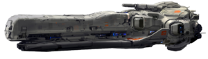
- Charon Class 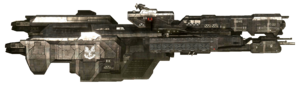
- Paris Class 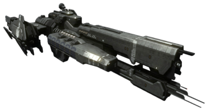
- Mulsanne Class 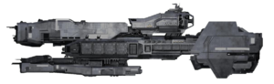
- Stalwart Class 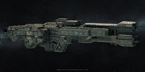
- Strident Class 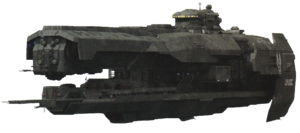
Cruisers
- Marathon Class 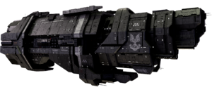
- Autumn Class 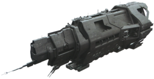
- Valiant Class 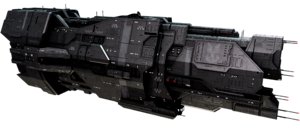
Destroyers
- Able Class 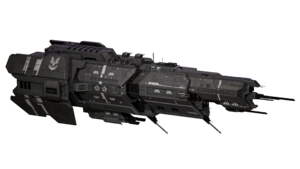
- Halberd Class 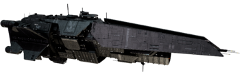
- Diligence Class

HIGHCOM
The UNSC High Command (HIGHCOM) serves as the top leadership structure of the United Nations Space Command, overseeing all branches of the UNSC, including the Navy, Marine Corps, and Army. HIGHCOM is responsible for strategic military decisions, coordinating major operations, and ensuring the security of humanity across its colonies. Based in the heart of Earth's defenses, HIGHCOM directs everything from large-scale space campaigns to ground-based operations, with key figures such as Fleet Admirals and top military officials guiding the efforts to protect humanity from both external alien threats and internal unrest.
Key Figures
Admiral Preston Cole: Best known for being the commander of the majority of the UNSC Navy and for his role in creating the Cole Protocol, a law responsible for defending Earth's location. A military genius, he defeated the Covenant in every major battle he fought. His battle record was considered as impressive as that of the Spartan-IIs. In 2543, at the Battle of Psi Serpentis, Cole was killed causing a gas giant to go nova, destroying a Covenant fleet. Nonetheless, some officers believe that Cole survived and chose to retire away from the UNSC.
Captain Jacob Keyes: A commanding officer and one of the most brilliant tacticians in the UNSC Navy. He commanded great respect as a highly skilled strategist and inspirational leader. His many decorations, thirty-five years of combat experience against the Covenant and Insurrectionists, and ability to keep a secret made him a natural choice to command the UNSC Pillar of Autumn and its secret cargo. He was renowned as a war hero for his development of the Keyes Loop tactic.
Commander Miranda Keyes: The daughter of Captain Jacob Keyes and Doctor Catherine Halsey. During her time in the military, she quickly ascended through the ranks and served as the commanding officer of both the UNSC In Amber Clad and the UNSC Forward Unto Dawn during the final months of the Human-Covenant War. She was also the commander of the human expedition force to an alien structure known as the Ark in late 2552, leading humanity in the final battle of the war.
Fleet Admiral Terrence Hood: Currently serving as a member of HIGHCOM, Admiral Hood played a pivotal role during the Human-Covenant War. Known for his leadership and strategic acumen, he continues to oversee the Navy's efforts to secure humanity’s new frontiers, ensuring stability and security.
Admiral Margaret Parangosky: Former head of the Office of Naval Intelligence (ONI), Parangosky was known for her intelligence operations that crippled the Covenant from within. She has since retired, passing the title of CINCONI to Admiral Serin Osman, but her influence and legacy continue to shape ONI's operations.
The Future of the Navy
As humanity pushes deeper into uncharted space, the UNSC Navy stands as the first line of defense against any threats that may arise. From patrolling distant colonies to safeguarding vital trade routes, the Navy ensures that humans can explore and expand without fear. Advanced ships and skilled crews work tirelessly to maintain peace, ready to respond to any challenge. Whether it's pirates, insurrectionists, or unknown alien forces, the UNSC Navy's presence guarantees security for all, allowing humanity to continue its journey among the stars with confidence.
Learn More About Our Heroes
- SN:03956-26127-PC - Admiral Preston Cole (2470-2543)
- SN:01928-19912-JK - Captain Jacob Keyes (2495-2552)
- SN:15972-19891-MK - Commander Miranda Keyes (2525-2552)
- SN:07960-48392-TH - Fleet Admiral Terrence Hood
- SN:00230-00923-MP - Admiral Margaret Parangosky